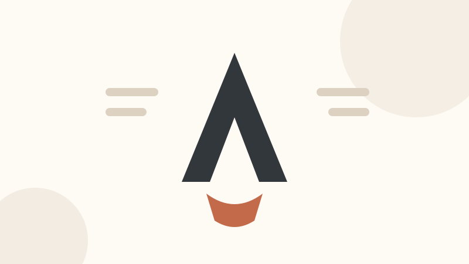

Product design
Research, interface design and a design system your engineers will actually keep.
Read more →We design and build considered digital products for teams who would rather do one thing properly than five things quickly.
Start a projectThree practices, one team, no handoffs.
Research, interface design and a design system your engineers will actually keep.
Read more →Astro, TypeScript and CSS that a small team can maintain without a framework rewrite every year.

Content models that fit how your team writes, not how a CMS vendor wishes you did.
They rebuilt our site in six weeks and we have not needed to call them since. That is the compliment.
Service
Research, interface design and a design system your engineers will actually keep.
We start every engagement with the questions nobody has written down yet, because those are the ones that decide what gets built.
Two-week cycles, a working prototype at the end of each, and a written decision log you keep afterwards.
See the engagement model for how we price it, or book an intro call.
Pick an element and choose "view code".